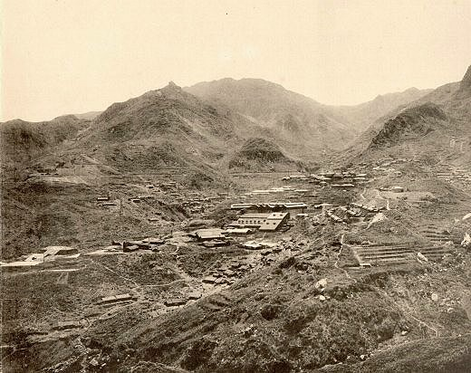

至於他為什麼不姓柳原呢?那是因為他後來被母方家族的平田治右衛門收養，所以才以
平田為姓氏，年輕的時候跟一群志同道合的朋友參加了倒幕行動，因此受了傷，行動失
敗後他躲在親戚家中，之後以浪人身分雲遊四海並進行武者修行，最後到了江戶並成了
桃井春藏的塾生，日後隨著他前往大阪。

明治十八年（1885年）開始在大阪的住友家底下的長州櫻鄉銅山進行數年的礦業研究，
日本統治台灣後，他在明治廿八年（1895年）向住友家辭職，打算來台灣發展他的礦業
專長，到達台灣後他先是在瑞芳一帶探勘礦產，同時向當時管理那一代的基隆支廳提出
約五十萬坪的試掘請願書打算開採，但是被拒絕了，理由是那處礦山是日本皇室財產，
被拒絕後平田源吾心情低落，加上他之前在山區探勘受的傷也開始被感染腐爛，又併發
了腳氣病，因為當時基隆缺乏醫療資源，所以他前往台北治病。

到了台北後，他先是到了大稻埕的台北病院，但是病情並沒有好轉，於是他就想到了也
許可以利用溫泉療養，之後他在醫院裡打聽到有一個叫「patao」的地方有溫泉，但經
過進一步的追問只知道這地方在淡水河畔某處，他先是搭船在八仙莊渡船頭處上岸尋訪
溫泉，但花了一天的時間卻毫無收穫(此日他所去的地方可能是北投對岸的觀音山地區)，
隔天改從圓山渡口上岸，經過芝山岩進入唭哩岸東邊的山區，並試著向當地人詢問
「patao」與溫泉的消息。而在日落的時候，他寫有問句的紙張被年輕人看到，才得知
當地人稱溫泉叫「磺水」，並且用紙筆來向對方表示願意付給每人三十錢的代價請他們
帶路，最後在傍晚時抵達了北投，但因為當時平田源吾以為北投溫泉是日式溫泉，所以
抵達時以為找錯地方了，直到天色變黑打算要回去時才注意到溪水其實是溫泉水，於是
他就直接泡了進去，原本平田源吾打算在草叢裡過夜，但蚊蟲太多只好作罷，之後又發
現了一戶人家並且被屋主收留才有地方過夜，在北投待了10天左右平田源吾覺得傷勢有
好轉，因為這趟旅程準備的不夠，所以決定先回台北，直到隔年三月才又回到北投。
回到北投後，平田源吾在當地買了一間房子並每天泡溫泉，五月時有位姓慎村的大稻埕
憲兵屯所伍長因為患了皮膚病前來，希望能寄住下來並藉由溫泉療養，而原本因平田源吾
所買的房子只有兩個房間，而且設備不好所以拒絕了，但在慎村伍長不斷請求下平田源吾
答應了，與此也順便整理溫泉周遭的環境，後來平田源吾開始經營了台灣第一間民營的
溫泉旅館，也就是天狗庵。